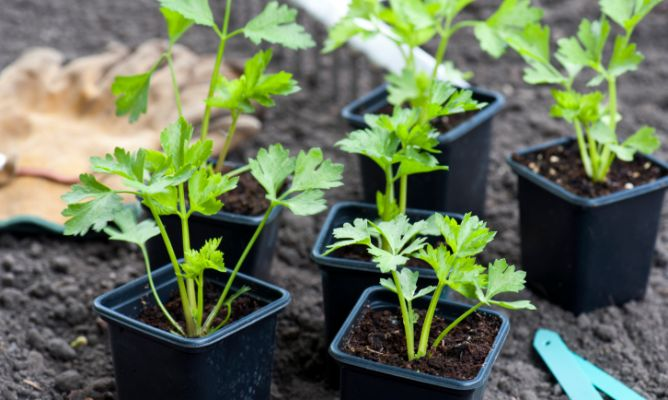
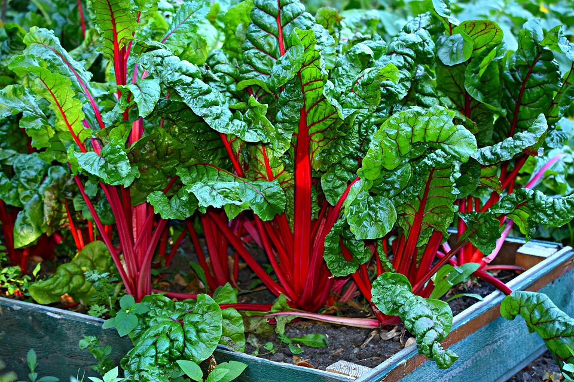
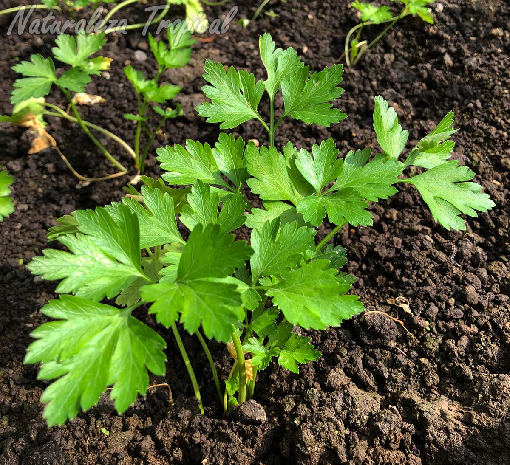
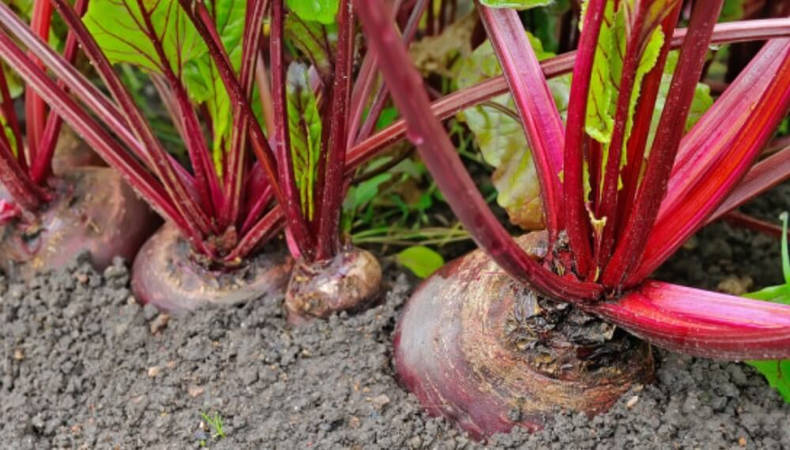
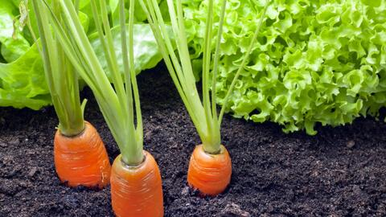

Apio

- forma de siembra: almácigo (set/nov) (marzo)
- transplante: (dic/marzo) (mayo)
- Variedad: primavera (platence-golden boy) otoño (verde coral- de verdeo)
- Asociación benefica: Acelga, berenjena, col espinaca,judía, pepino, puerro, rábano, pimiento, tomate.
- Asociación dañina: Patata, zanahoria
Acelga
- forma de siembra: almácigo y transplante o siembra directa
- Variedad: invierno (Dark-Ribbed Green) verano/otoño (Anual verde) anual(Bressane)
- Asociación benefica: apio, cebollas, col, judía,lechugas, pimiento, rábano, tomate, zanahoria
- Asociación dañina: Espárragos, puerros
perejil

- forma de siembra: directa al voleo (septiembre)
- Variedad: primavera (común-liso) otoño (gigante)
- Asociación benefica: tomate, cebolla
- Asociación dañina:lechuga
Remolacha
- forma de siembra: directa en linea o transplante
- Variedad: otoño/invierno (early wonder) anual(detroit)
- Asociación benefica: ajo,cebolla,repollo, pepino
- Asociación dañina: tomate
zanahoria

- forma de siembra: directa a chorrillo
- Variedad: verano/otoño (criolla) anual (chantennay-nantesa)
- Asociación benefica: Acelga, ajo, berenjena, cebolla,repollo, poroto verde, arveja, lechuga, patata, puerro,tomate.
- Asociación dañina:Apio, betarraga
volver